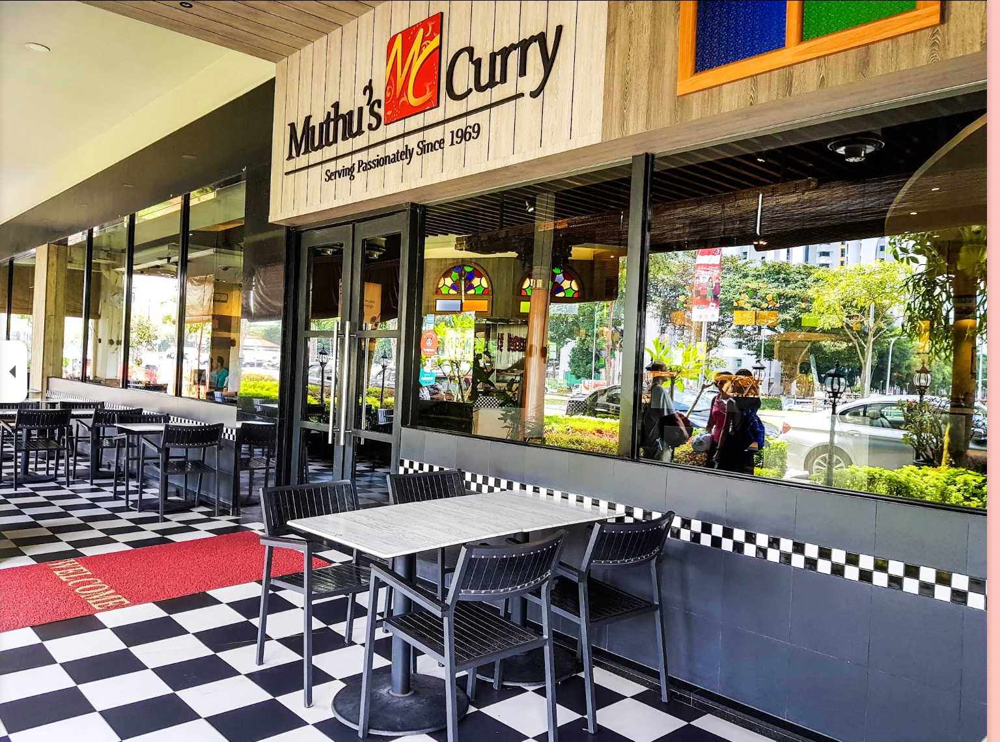
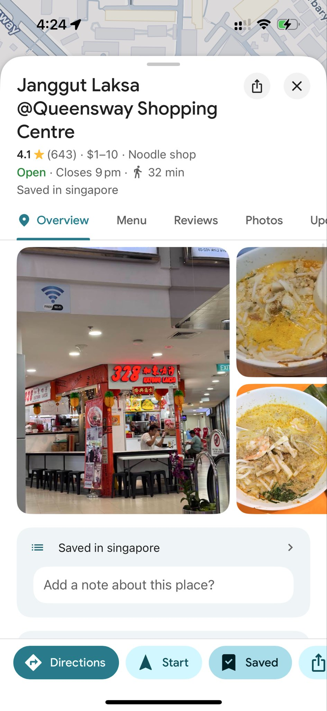
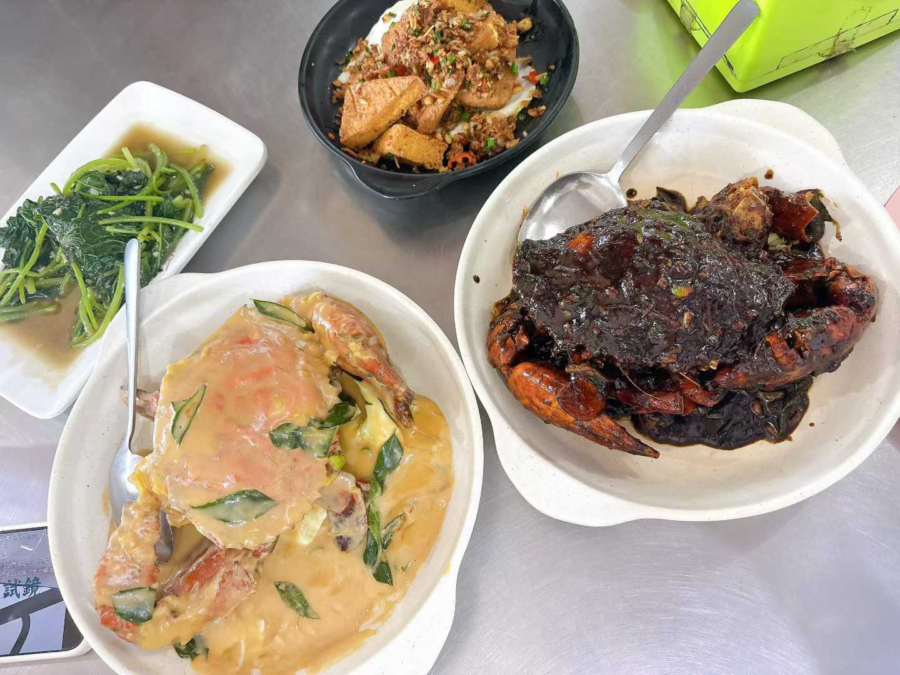

在新加坡和新山吃过最好的食物（持续更新）
文章目录
个人在新加坡和新山吃过最好的食物（持续更新）
因为我对象特别喜欢吃，并且我作为一个程序员虽然对吃没有太在行，但是我对于找餐厅做 research 是非常专业的。 BTW: 图是从 Google Map 上截的，所以如果有版权问题请联系我删除。
新加坡
May Pho Culture（越南河粉）
地址：150 South Bridge Rd, #01-16, Singapore 058727
推荐理由：这家越南河粉店的汤底醇厚浓郁，层次丰富。店内提供新鲜的越南香叶（罗勒叶），需要顾客自己一片片摘下放入河粉中，清香四溢，与浓郁的汤底完美融合。感觉比在越南本地吃到的还要好吃，强烈推荐大家去试试。

Bentong Durian Pte Ltd（猫山王榴莲）
地址：241 Holland Ave, #01-02, Singapore 278976
推荐理由：
- 贴心服务：采用 B 果（整果）榴莲，不让顾客挑选，直接开壳装盒。我购买的那盒 45 新元，店家开了两个 B 果猫山王，避免顾客挑到房数少的榴莲，充分为顾客着想。
- 品质保证：具备顶级榴莲摊的特点——不会在榴莲季刚开始就营业。因为季初很多猫山王会有些夹生，他们只在榴莲品质最佳时才开门迎客，保证每一颗榴莲都处于完美状态。

Muthu’s Curry
地址：138 Race Course Rd, #01-01, Singapore 218591 推荐理由：干净又卫生哈，他家的芒果拉西（Mango Lassi）特别好喝，Naan饼也很赞，Chicken Tikka 也很顶。

Cafe USAGI Tokyo
地址：3 Temasek Blvd, #02-615A, Singapore 038983 推荐理由：我最喜欢他家的外面裹着麻薯的海盐冰淇凌，每次去 Suntec City 都会去吃一份。
Janggut Laksa @Queensway Shopping Centre
地址：1 Queensway, #01-59, Singapore 149053 推荐理由：这家 Laksa 是我在新加坡吃过最好吃的 Laksa 了，本地人心目中 top 1, 去买折叠自行车的时候发现很多人排队，尝了一下真香。

新山
Ong Shun Seafood Restaurant
地址：67, Jalan Abdul Samad, Kampung Bahru, 80100 Johor Bahru, Johor Darul Ta’zim, 马来西亚
推荐理由：这家感觉是个人在吃过最好吃的海鲜餐厅了，都是本地人去吃的，环境也不错，价格也不贵。推荐黑胡椒螃蟹和奶油螃蟹，还有椒盐虾。最厉害是的超级鲜甜，就是黑胡椒螃蟹这么重口的情况下，蟹肉也是超级鲜甜，真的很厉害。

文章作者 xiantang
上次更新 2025-12-29 (ec4a6f4b)